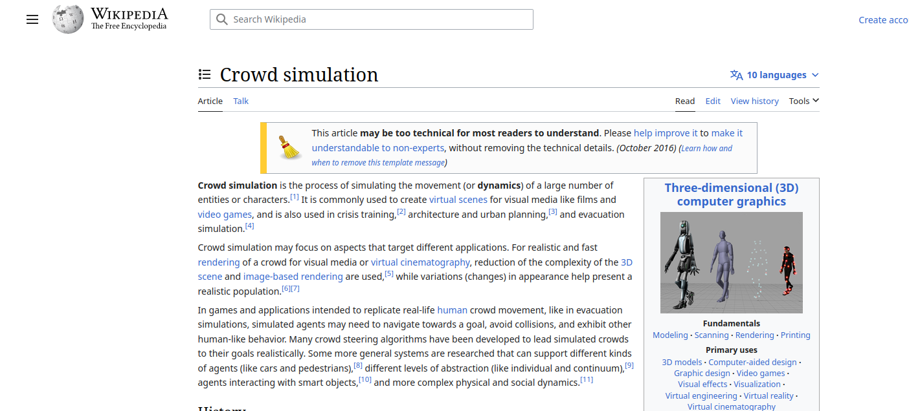
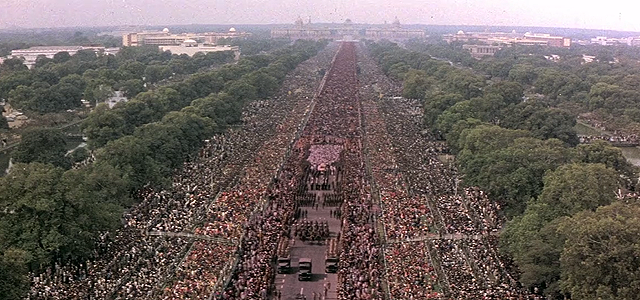

My way of putting it all togther:
Replication of a real word situation where a bunch of
assets are moving along or interacting with each other.
- "Crowd Simulation" by Daniel Thalmann and Soraia Raupp Musse,
published in the ACM SIGGRAPH Computer Graphics journal in 2007.
- "Real-time crowd simulation using fuzzy logic"
by Abdulkadir Sengür, Bülent Özgüç, and Yücel Yemez.
- "Crowd simulation with interactive steering"
by Julien Pettre, Stephane Donikian, and Gerard Hegron.

- Gandhi 1982
- Director: Richard Attenborough
- Writer: John Briley
- Over 300,000 extras appeared in the funeral sequence.
- 200,000 were volunteers.
- Scene shot on sequence was filmed on January 31, 1981.
Digital Production in our context began with films like Terminator 2 and Jurassic Park in the late 1990s.
avik.c@whistlingwoods.net